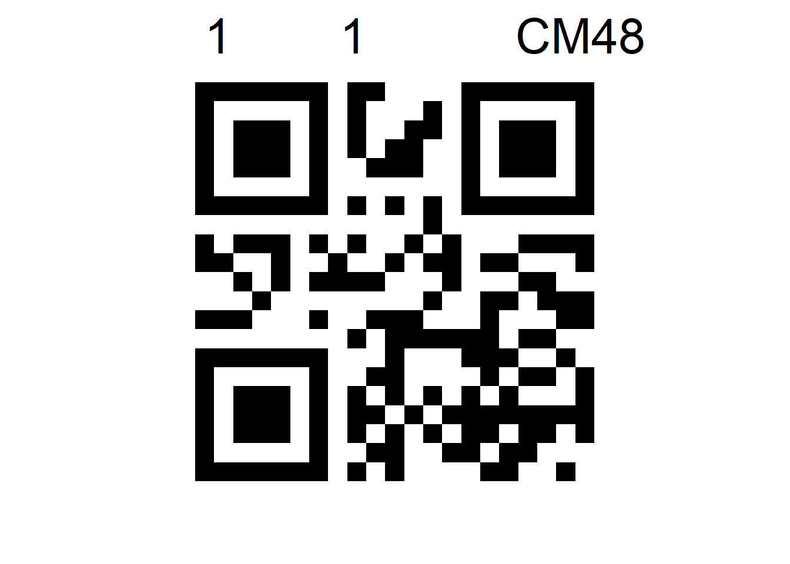

library(readxl)
library(qrcode)
library(tidyverse)
mk_qr_label <- function(
plot = 1,
field = 1,
pedigree = 'CM48',
max_len = 12,
output_dir = './output/'
){
# clean inputs
plot <- as.character(plot)
field <- as.character(field)
pedigree <- as.character(pedigree)
# info to be embedded
label <- paste(c(field, '_', pedigree), collapse='')
# Set up save name
savename <- paste(plot, field, stringr::str_replace_all(label, '/', '\\'),
sep = '_')
save_path <- paste(output_dir, savename, ".svg", sep = '')
# create qr code
code <- qr_code(label)
# reshape for ggplot
code_long <- pivot_longer(mutate(
X = seq(1, nrow(as.data.frame(code))),
as.data.frame(code)),
cols = starts_with('V')) %>%
mutate(Y = -1*as.numeric(str_remove(name, 'V')))
# create text for ggplot
align_label <- paste(
c(plot,
paste0(rep(' ', max(c(0, (max_len - stringr::str_length(pedigree)))))),
field,
paste0(rep(' ', max(c(0, (max_len - stringr::str_length(field)))))),
pedigree), collapse = '')
# make plot
plt <- ggplot(code_long)+
geom_tile(aes(X, Y, fill = value))+
annotate(geom = "text",
x = min(filter(code_long, value)$X),
y = -1,
label = align_label,
hjust = 0,
size = 11
)+
scale_fill_manual(values = c('white', 'black'))+
theme_void()+
theme(legend.position = '')+
coord_equal()
return(list('qr'=plt, 'path'=save_path))
}QR Code Generation
QR Codes for Easier Record Keeping
For certain tasks in the lab we use QR code to label plants, samples, or other materials. Generating these can take a bit of doing, so we have a few simple scripts to do this. Ideally, we want to make our labels both machine and human readable so we will produce labels with text alongside the QR code.
Use of this function is straight forward. It accepts numeric or text data for the plot, field, and pedigree of a plant. To ensure these attributes are positioned in a way that is easy to read, max_len adds spaces after each (up to the number specified). This results in text that is separated cleanly. The function returns a plot of the QR and the expected location for it to be saved. This will enable future extensions such as writing a batch of qr codes to a word document with officer for easy printing.
output_list <- mk_qr_label(
plot = 1,
field = 1,
pedigree = 'CM48',
max_len = 12,
output_dir = './output/'
)
print(output_list$path)[1] "./output/1_1_1_CM48.svg"output_list$qr
Use for batch processing is simple. We need to read in a spreadsheet with the label information and ensure that there are no missing values.Then we can loop over the entries and pass the output of mk_qr_label into ggsave and it will save them to the output directory.
labels <- read_excel('./Grain_Labels_Demo.xlsx')
# overwrite key fields with character version and add in missing labels for NAs
walk(c("Plot", "Field", "Pedigree"), function(e){
labels[[e]] <<- as.character(labels[[e]])
labels[is.na(labels[[e]]), e] <<- 'MISSING'
})
for(i in seq(1, nrow(labels))){
output_list <- mk_qr_label(
plot = labels[i, 'Plot'],
field = labels[i, 'Field'],
pedigree = labels[i, 'Pedigree'],
max_len = 12,
output_dir = './output/'
)
ggsave(filename = output_list$path,
plot = output_list$qr
)
}